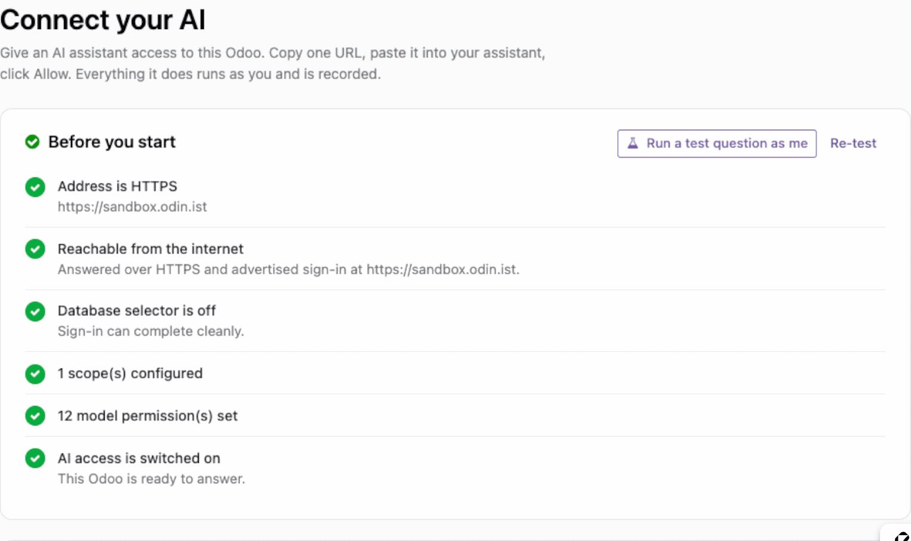

<meta charset="utf-8">
<section class="aimcp" style='font-family:-apple-system, BlinkMacSystemFont, "Segoe UI", Roboto, Helvetica, Arial, sans-serif; color:#0F172A; background:#fff; line-height:1.65; max-width:1020px; margin:0 auto; padding:0 0 56px; -webkit-font-smoothing:antialiased'>


<!-- ==================================================================== hero -->
<div class="hero" style="padding:clamp(38px, 5.938vw, 52px) clamp(20px, 3.125vw, 32px) clamp(32px, 5vw, 44px); text-align:center; background:linear-gradient(170deg, #0F172A 0%, #134E4A 100%); border-radius:18px; color:#fff">
  <span class="pill" style="display:inline-block; background:rgba(255, 255, 255, 0.13); border:1px solid rgba(255, 255, 255, 0.28); color:#fff; border-radius:999px; padding:7px 18px; font-size:13.5px; font-weight:650; letter-spacing:0.02em; margin:0 0 22px">Free &amp; open source &middot; Works with Claude, ChatGPT, Gemini and Cursor</span>
  <h1 style="font-size:clamp(33px, 5.156vw, 46px); line-height:1.06; font-weight:800; letter-spacing:-0.03em; margin:0 0 16px; color:#fff">Ask your Odoo a question.<br>Get a straight answer.</h1>
  <p style="margin:0 auto 22px; font-size:19px; color:#C3D2D6; max-width:600px">
    You already pay for an AI assistant. Connect it to Odoo and it can answer
    questions about your own business &mdash; in seconds, in plain English, without
    you building a single report.
  </p>
  <div class="shotwrap" style="max-width:760px; margin:26px auto 0; border-radius:12px; overflow:hidden; box-shadow:0 20px 50px -20px rgba(0, 0, 0, 0.6); border:1px solid rgba(255, 255, 255, 0.12)"></div>
  <p class="cap" style="margin:12px 0 0; font-size:13.5px; color:#93A6AC; max-width:600px">A real question, and the real answer, straight out of Odoo.</p>
</div>

<!-- ============================================================== the insight -->
<div class="sec" style="padding:44px 0; border-top:1px solid #E2E8F0">
  <h2 style="font-size:clamp(25px, 3.906vw, 30px); line-height:1.2; font-weight:750; letter-spacing:-0.02em; margin:0 0 10px">The reports you never built</h2>
  <p class="lede" style="margin:0 0 28px; font-size:18px; color:#475569; max-width:640px">
    Every business has questions it stops asking because the answer is too much
    trouble to get. This is for those.
  </p>

  <div class="qgroup" style="margin:0 0 22px">
    <p class="qlabel" style="margin:0 0 10px; font-size:12px; font-weight:750; letter-spacing:0.1em; text-transform:uppercase; color:#0D9488">Sales</p>
    <span class="q" style="display:block; background:#F8FAFC; border:1px solid #E2E8F0; border-radius:10px; padding:11px 16px; margin:0 0 8px; font-size:15.5px; color:#0F172A">Who were my ten biggest customers last quarter?</span>
    <span class="q" style="display:block; background:#F8FAFC; border:1px solid #E2E8F0; border-radius:10px; padding:11px 16px; margin:0 0 8px; font-size:15.5px; color:#0F172A">Which quotations have been sitting unconfirmed for over a month?</span>
  </div>
  <div class="qgroup" style="margin:0 0 22px">
    <p class="qlabel" style="margin:0 0 10px; font-size:12px; font-weight:750; letter-spacing:0.1em; text-transform:uppercase; color:#0D9488">Money</p>
    <span class="q" style="display:block; background:#F8FAFC; border:1px solid #E2E8F0; border-radius:10px; padding:11px 16px; margin:0 0 8px; font-size:15.5px; color:#0F172A">How much is owed to us right now, and by whom?</span>
    <span class="q" style="display:block; background:#F8FAFC; border:1px solid #E2E8F0; border-radius:10px; padding:11px 16px; margin:0 0 8px; font-size:15.5px; color:#0F172A">Compare this year's revenue by month against last year's.</span>
  </div>
  <div class="qgroup" style="margin:0 0 22px">
    <p class="qlabel" style="margin:0 0 10px; font-size:12px; font-weight:750; letter-spacing:0.1em; text-transform:uppercase; color:#0D9488">Stock &amp; operations</p>
    <span class="q" style="display:block; background:#F8FAFC; border:1px solid #E2E8F0; border-radius:10px; padding:11px 16px; margin:0 0 8px; font-size:15.5px; color:#0F172A">What are we about to run out of?</span>
    <span class="q" style="display:block; background:#F8FAFC; border:1px solid #E2E8F0; border-radius:10px; padding:11px 16px; margin:0 0 8px; font-size:15.5px; color:#0F172A">Which deliveries are late, and how late?</span>
  </div>

  <p style="margin:0 0 14px; font-size:15.5px; color:#475569; margin-top:20px">
    Ask follow-ups the way you would ask a colleague. Your assistant can chart
    it, put it in a table, or write the summary email for you &mdash; because once it
    can see the numbers, it can do everything it already does well with them.
  </p>
</div>

<!-- ================================================================= evidence -->
<div class="sec" style="padding:44px 0; border-top:1px solid #E2E8F0">
  <h2 style="font-size:clamp(25px, 3.906vw, 30px); line-height:1.2; font-weight:750; letter-spacing:-0.02em; margin:0 0 10px">And it does something with the answer</h2>
  <p class="lede" style="margin:0 0 28px; font-size:18px; color:#475569; max-width:640px">
    Your assistant is already good at charts, tables and writing things up. It
    just never had your numbers before.
  </p>
  <div class="grid" style="display:flex; flex-wrap:wrap; gap:14px">
    <div class="col" style="flex:1 1 290px; background:#fff; border:1px solid #E2E8F0; border-radius:14px; padding:22px 24px">
      <h3 style="font-size:18px; line-height:1.35; font-weight:700; margin:0 0 6px">Chart it</h3>
      <p style="margin:0; font-size:15px; color:#475569">"Show that as a bar chart by month." You get one, in the conversation,
        without opening anything.</p>
    </div>
    <div class="col" style="flex:1 1 290px; background:#fff; border:1px solid #E2E8F0; border-radius:14px; padding:22px 24px">
      <h3 style="font-size:18px; line-height:1.35; font-weight:700; margin:0 0 6px">Tabulate it</h3>
      <p style="margin:0; font-size:15px; color:#475569">"Put the top twenty in a table with their contact details." Ready to
        paste wherever it needs to go.</p>
    </div>
    <div class="col" style="flex:1 1 290px; background:#fff; border:1px solid #E2E8F0; border-radius:14px; padding:22px 24px">
      <h3 style="font-size:18px; line-height:1.35; font-weight:700; margin:0 0 6px">Write it up</h3>
      <p style="margin:0; font-size:15px; color:#475569">"Draft the Monday summary for the team." It has the figures, so the
        summary is about your week rather than a template.</p>
    </div>
  </div>
</div>

<!-- =================================================================== safety -->
<div class="sec" style="padding:44px 0; border-top:1px solid #E2E8F0">
  <div class="safe" style="background:#F8FAFC; border-radius:16px; padding:34px 32px">
    <h2 style="font-size:clamp(25px, 3.906vw, 30px); line-height:1.2; font-weight:750; letter-spacing:-0.02em; margin:0 0 10px">It can look. It cannot touch.</h2>
    <p class="lede" style="margin:0 0 28px; font-size:18px; color:#475569; max-width:640px; margin-bottom:22px">
      The first question everyone asks, answered properly.
    </p>
    <div class="grid" style="display:flex; flex-wrap:wrap; gap:14px">
      <div class="col" style="flex:1 1 290px; background:#fff; border:1px solid #E2E8F0; border-radius:14px; padding:22px 24px; border-color:#DCEAE7">
        <h3 style="font-size:18px; line-height:1.35; font-weight:700; margin:0 0 6px">Nothing can be changed</h3>
        <p style="margin:0; font-size:15px; color:#475569">
          This app can read and count and total. It has no way to create,
          edit or delete anything in your Odoo &mdash; not because a setting says
          so, but because the ability was never built into it.
        </p>
      </div>
      <div class="col" style="flex:1 1 290px; background:#fff; border:1px solid #E2E8F0; border-radius:14px; padding:22px 24px; border-color:#DCEAE7">
        <h3 style="font-size:18px; line-height:1.35; font-weight:700; margin:0 0 6px">It sees exactly what you see</h3>
        <p style="margin:0; font-size:15px; color:#475569">
          Every question runs as the person who asked it. If a colleague
          cannot open a record in Odoo, their assistant cannot see it either.
          Nobody gets a back door.
        </p>
      </div>
      <div class="col" style="flex:1 1 290px; background:#fff; border:1px solid #E2E8F0; border-radius:14px; padding:22px 24px; border-color:#DCEAE7">
        <h3 style="font-size:18px; line-height:1.35; font-weight:700; margin:0 0 6px">You choose what it can look at</h3>
        <p style="margin:0; font-size:15px; color:#475569">
          A simple on/off list of the areas your assistant may read &mdash;
          customers, orders, invoices, stock. Tick what you are comfortable
          with. Change your mind any time.
        </p>
      </div>
      <div class="col" style="flex:1 1 290px; background:#fff; border:1px solid #E2E8F0; border-radius:14px; padding:22px 24px; border-color:#DCEAE7">
        <h3 style="font-size:18px; line-height:1.35; font-weight:700; margin:0 0 6px">Everything is written down</h3>
        <p style="margin:0; font-size:15px; color:#475569">
          Every question, who asked it and when, kept for a month.
          Each person can see their own. No surprises later.
        </p>
      </div>
    </div>
  </div>
</div>

<!-- ================================================================ connect shot -->
<div class="sec" style="padding:44px 0; border-top:1px solid #E2E8F0">
  
  <p style="margin:10px 0 0; text-align:center; color:#64748B; font-size:13.5px">
    Odoo checks the connection is reachable and switched on before you hand the
    address to an assistant.
  </p>
</div>

<!-- ==================================================================== setup -->
<div class="sec" style="padding:44px 0; border-top:1px solid #E2E8F0">
  <h2 style="font-size:clamp(25px, 3.906vw, 30px); line-height:1.2; font-weight:750; letter-spacing:-0.02em; margin:0 0 10px">Two minutes, and no settings to get wrong</h2>
  <p class="lede" style="margin:0 0 28px; font-size:18px; color:#475569; max-width:640px">
    There is one page. It checks everything before you leave it, so you never
    find out something is wrong by watching your assistant fail.
  </p>

  <div class="step" style="display:flex; gap:18px; padding:20px 0; border-top:1px solid #E2E8F0; border-top:0">
    <div class="num" style="flex:0 0 34px; height:34px; border-radius:50%; background:#CCFBF1; color:#0D9488; font-weight:750; font-size:15px; display:flex; align-items:center; justify-content:center">1</div>
    <p style="margin:0; font-size:15.5px; color:#475569"><b style="color:#0F172A">Install it.</b> Your Odoo is set up for you as you install &mdash; the app
      works out which parts of your business you actually run, and opens those
      up for reading. Sales, invoicing, stock, contacts, whichever you have.</p>
  </div>
  <div class="step" style="display:flex; gap:18px; padding:20px 0; border-top:1px solid #E2E8F0">
    <div class="num" style="flex:0 0 34px; height:34px; border-radius:50%; background:#CCFBF1; color:#0D9488; font-weight:750; font-size:15px; display:flex; align-items:center; justify-content:center">2</div>
    <p style="margin:0; font-size:15.5px; color:#475569"><b style="color:#0F172A">Copy one address.</b> One line, one button. There is a QR code if you
      want it on your phone, and a single click for VS&nbsp;Code and Cursor.</p>
  </div>
  <div class="step" style="display:flex; gap:18px; padding:20px 0; border-top:1px solid #E2E8F0">
    <div class="num" style="flex:0 0 34px; height:34px; border-radius:50%; background:#CCFBF1; color:#0D9488; font-weight:750; font-size:15px; display:flex; align-items:center; justify-content:center">3</div>
    <p style="margin:0; font-size:15.5px; color:#475569"><b style="color:#0F172A">Paste it into your assistant and sign in.</b> You log in with your
      normal Odoo username and password &mdash; the same one you use every day, with
      whatever two-factor or single sign-on you already have. Then ask it
      something.</p>
  </div>
  <div class="step" style="display:flex; gap:18px; padding:20px 0; border-top:1px solid #E2E8F0">
    <div class="num" style="flex:0 0 34px; height:34px; border-radius:50%; background:#CCFBF1; color:#0D9488; font-weight:750; font-size:15px; display:flex; align-items:center; justify-content:center">&check;</div>
    <p style="margin:0; font-size:15.5px; color:#475569"><b style="color:#0F172A">Not sure it worked?</b> There is a button that asks a real question on
      your behalf and shows you the answer, before you have touched your
      assistant at all.</p>
  </div>
</div>

<!-- ================================================================== clients -->
<div class="sec" style="padding:44px 0; border-top:1px solid #E2E8F0">
  <h2 style="font-size:clamp(25px, 3.906vw, 30px); line-height:1.2; font-weight:750; letter-spacing:-0.02em; margin:0 0 10px">Bring the assistant you already use</h2>
  <p class="lede" style="margin:0 0 28px; font-size:18px; color:#475569; max-width:640px">
    Nothing to sign up for, no second subscription, no API key to paste
    anywhere. If your assistant can take a connector, it works.
  </p>
  <div class="chips" style="display:flex; flex-wrap:wrap; gap:9px; margin:4px 0 0">
    <span class="chip" style="background:#fff; border:1px solid #E2E8F0; border-radius:999px; padding:8px 17px; font-size:14.5px; font-weight:600; color:#0F172A">Claude</span>
    <span class="chip" style="background:#fff; border:1px solid #E2E8F0; border-radius:999px; padding:8px 17px; font-size:14.5px; font-weight:600; color:#0F172A">ChatGPT</span>
    <span class="chip" style="background:#fff; border:1px solid #E2E8F0; border-radius:999px; padding:8px 17px; font-size:14.5px; font-weight:600; color:#0F172A">Gemini</span>
    <span class="chip" style="background:#fff; border:1px solid #E2E8F0; border-radius:999px; padding:8px 17px; font-size:14.5px; font-weight:600; color:#0F172A">Cursor</span>
    <span class="chip" style="background:#fff; border:1px solid #E2E8F0; border-radius:999px; padding:8px 17px; font-size:14.5px; font-weight:600; color:#0F172A">VS Code</span>
    <span class="chip" style="background:#fff; border:1px solid #E2E8F0; border-radius:999px; padding:8px 17px; font-size:14.5px; font-weight:600; color:#0F172A">Copilot</span>
    <span class="chip" style="background:#fff; border:1px solid #E2E8F0; border-radius:999px; padding:8px 17px; font-size:14.5px; font-weight:600; color:#0F172A">&hellip;and any other</span>
  </div>
  <p style="margin:0 0 14px; font-size:15px; color:#64748B; margin-top:16px">
    Your data goes to the assistant you chose and nowhere else. Nothing passes
    through us, and there is no account to create.
  </p>
</div>

<!-- =================================================================== limits -->
<div class="sec" style="padding:44px 0; border-top:1px solid #E2E8F0">
  <div class="limits" style="border:1px dashed #CBD5E1; border-radius:16px; padding:30px 32px">
    <h2 style="font-size:clamp(25px, 3.906vw, 30px); line-height:1.2; font-weight:750; letter-spacing:-0.02em; margin:0 0 10px">Free, and honest about where it stops</h2>
    <p class="lede" style="margin:0 0 28px; font-size:18px; color:#475569; max-width:640px; margin-bottom:20px">
      This is the whole app, not a countdown to a paywall. Here is exactly what
      you get and what you do not.
    </p>
    <div class="lrow" style="display:flex; gap:14px; padding:11px 0; border-top:1px solid #E2E8F0; font-size:15.5px; border-top:0">
<span class="tick" style="flex:0 0 22px; color:#047857; font-weight:800">&check;</span><span>Ask anything about your Odoo data, from any assistant</span>
</div>
    <div class="lrow" style="display:flex; gap:14px; padding:11px 0; border-top:1px solid #E2E8F0; font-size:15.5px">
<span class="tick" style="flex:0 0 22px; color:#047857; font-weight:800">&check;</span><span>As many people as you like &mdash; everyone in your company can connect their own</span>
</div>
    <div class="lrow" style="display:flex; gap:14px; padding:11px 0; border-top:1px solid #E2E8F0; font-size:15.5px">
<span class="tick" style="flex:0 0 22px; color:#047857; font-weight:800">&check;</span><span>Choose which areas of your business are readable</span>
</div>
    <div class="lrow" style="display:flex; gap:14px; padding:11px 0; border-top:1px solid #E2E8F0; font-size:15.5px">
<span class="tick" style="flex:0 0 22px; color:#047857; font-weight:800">&check;</span><span>A record of every question asked</span>
</div>
    <div class="lrow" style="display:flex; gap:14px; padding:11px 0; border-top:1px solid #E2E8F0; font-size:15.5px">
<span class="dash" style="flex:0 0 22px; color:#94A3B8; font-weight:800">&mdash;</span><span><b>Letting the assistant make changes</b> &mdash; creating a quotation, updating a contact, confirming an order</span>
</div>
    <div class="lrow" style="display:flex; gap:14px; padding:11px 0; border-top:1px solid #E2E8F0; font-size:15.5px">
<span class="dash" style="flex:0 0 22px; color:#94A3B8; font-weight:800">&mdash;</span><span><b>Approving those changes before they happen</b>, so a person always signs off</span>
</div>
    <div class="lrow" style="display:flex; gap:14px; padding:11px 0; border-top:1px solid #E2E8F0; font-size:15.5px">
<span class="dash" style="flex:0 0 22px; color:#94A3B8; font-weight:800">&mdash;</span><span><b>Different rules for different teams</b> &mdash; finance sees one thing, the sales floor another</span>
</div>
    <div class="lrow" style="display:flex; gap:14px; padding:11px 0; border-top:1px solid #E2E8F0; font-size:15.5px">
<span class="dash" style="flex:0 0 22px; color:#94A3B8; font-weight:800">&mdash;</span><span><b>Long-term records</b> for audit, and connections for systems rather than people</span>
</div>
    <p style="margin:20px 0 0; font-size:15.5px; color:#475569">
      Those four are <b>AI MCP Pro</b>. You will know when you need it &mdash;
      and until then, nothing here expires or nags.
    </p>
  </div>
</div>

<!-- ==================================================================== extra -->
<div class="sec" style="padding:44px 0; border-top:1px solid #E2E8F0">
  <h2 style="font-size:clamp(25px, 3.906vw, 30px); line-height:1.2; font-weight:750; letter-spacing:-0.02em; margin:0 0 10px">Build dashboards by asking for them</h2>
  <p class="lede" style="margin:0 0 28px; font-size:18px; color:#475569; max-width:640px; margin-bottom:0">
    Once this is connected, install <b>AI Dashboards Free</b> &mdash; also free &mdash; and
    you can describe a dashboard in a sentence and have it appear in Odoo as a
    screen your team opens like any other.
  </p>
</div>

<div class="foot" style="text-align:center; padding:34px 0 0; border-top:1px solid #E2E8F0; color:#64748B; font-size:14px">
  <p style="margin:0 0 6px"><a href="mailto:developers@fleet.ke" style="color:#0D9488; font-weight:650; text-decoration:none">developers@fleet.ke</a></p>
  <p style="margin:0">Odoo 19 &middot; Community, Enterprise and Odoo.sh &middot; Open source (LGPL-3)</p>
</div>

</section>
